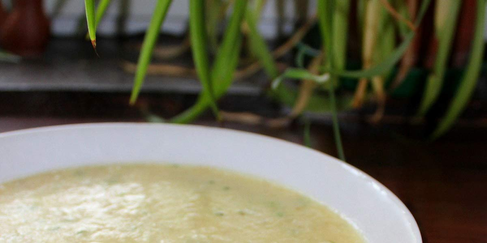

Parsnip Soup
Recipe Specification
Ingredients List
| Ingredients | Quantity |
|---|---|
| Olive Oil | 40ml |
| White Onions | 2x1 |
| Garlic Cloves | 4 Cloves |
| Ground Ginger | 1 tsp |
| Garam Masala | 2 tsp |
| Parsnip | 1.5kg |
| Whole Milk | 900ml |
| Vegetable Stock | 900ml |
| Salt & Pepper | To Taste |
Yield: 6-8 portions
Preparation
- Peel and slice onion.
- Peel and cut parsnips into equal sized pieces.
- Peel and crush garlic cloves.
Cooking Instructions
- Place a large saucepan over a medium/high heat and add vegetable oil.
- Add onion and cook for 5 minutes.
- Once onions have softened, add parsnip, garlic, ground ginger and garam masala. Sauté ingredients for a further 3 minutes.
- Add milk and vegetable stock to the pan ensuring that the vegetables are submerged. Add water if needed.
- Place a lid over the saucepan and bring to the boil before reducing heat to a simmer. Cook for 20-25 minutes.
- Once vegetables in saucepan are soft to the touch, place in a food processor or alternatively, use a stick blender and blend smooth.
- Pass soup through a chinois to strain out any big bits and return to the saucepan.
- Season to taste before serving.

Serving Suggestions
This soup goes well with crusty bread and lots of butter.
Storing instructions
Allow to cool to room temperature before placing in an airtight container and placing in the fridge. Consume within 4 days of making it.
Reheating Instructions
Gently bring back up to temperature in saucepan on stove. Alternatively, warm in microwave for 3 minutes, stirring every 1 minute to ensure even warming.